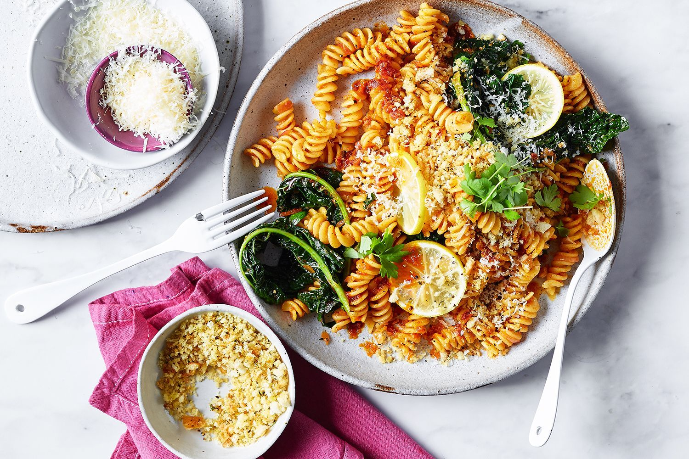

Authentic Home Food in UK
What2Eat is a courier service in which authentic home cook food is delivered to a customer.

What2Eat is a courier service in which authentic home cook food is delivered to a customer.
 In today's globalized world, culinary boundaries are increasingly blurred, giving rise to the vibrant and delicious world of fusion cuisine. By combining ingredients and techniques from different culinary traditions, fusion food offers a unique and exciting dining experience that celebrates diversity and creativity. In this blog post, we'll explore 10 innovative fusion recipes that blend the flavors of the East and the West, resulting in mouthwatering dishes that are sure to delight your taste buds.
1. Sushi Pizza: Take your love for sushi to the next level with this inventive fusion dish. Start with a crispy rice crust, top it with a layer of creamy avocado, fresh sashimi slices, and a drizzle of spicy mayo. Finish with a sprinkle of sesame seeds and chopped scallions for an irresistible combination of Japanese and Italian flavors.
2. Korean BBQ Tacos: Combine the bold flavors of Korean barbecue with the handheld convenience of tacos for a meal that's sure to impress. Marinate thinly sliced beef or tofu in a sweet and savory Korean BBQ sauce, then grill until caramelized and tender. Serve in warm corn tortillas with crunchy kimchi, shredded lettuce, and a dollop of spicy gochujang mayo for a delicious fusion of Korean and Mexican cuisines.
3. Pad Thai Carbonara: Give traditional Italian carbonara a Thai-inspired twist with this innovative fusion recipe. Replace the usual pasta with rice noodles and toss them in a creamy coconut milk sauce flavored with tangy tamarind and spicy chili paste. Add in crispy bacon or tofu, sautéed shrimp, and a sprinkle of chopped peanuts for a mouthwatering blend of Thai and Italian flavors.
4. Ramen Burger: Combine two beloved comfort foods – ramen and burgers – into one delicious fusion dish. Form cooked ramen noodles into buns, then grill or pan-fry until crispy and golden brown. Fill them with juicy beef patties or crispy tofu, along with your favorite burger toppings like lettuce, tomato, and cheese. Finish with a drizzle of teriyaki sauce or spicy mayo for an unforgettable East-meets-West flavor experience.
5. Tempura Fish Tacos: Put a Japanese spin on traditional fish tacos with this tasty fusion recipe. Dip fresh fish fillets in a light and crispy tempura batter, then fry until golden and crunchy. Serve in warm tortillas with shredded cabbage, sliced avocado, and a drizzle of creamy wasabi aioli for a delightful fusion of Japanese and Mexican flavors.
6. Teriyaki Chicken Pizza: Upgrade your pizza night with this Asian-inspired fusion recipe. Spread a thin layer of teriyaki sauce over a pizza crust, then top with cooked chicken, bell peppers, onions, and pineapple chunks. Sprinkle with mozzarella cheese and bake until bubbly and golden brown. Garnish with chopped cilantro and sliced green onions for a delicious blend of Italian and Japanese cuisines.
7. Bulgogi Beef Nachos: Give classic nachos a Korean twist with this creative fusion recipe. Top crispy tortilla chips with tender bulgogi beef, melted cheese, and a generous drizzle of gochujang crema. Add diced tomatoes, jalapeños, and sliced scallions for extra flavor and crunch. Serve with a side of kimchi for a unique East-meets-West appetizer that's perfect for sharing.
8. Matcha Tiramisu: Put a green tea twist on traditional tiramisu with this delightful fusion dessert. Replace the coffee-soaked ladyfingers with matcha-flavored sponge cake, then layer with creamy mascarpone cheese and sweetened whipped cream. Dust with matcha powder for a vibrant green finish and garnish with fresh berries for a refreshing East-meets-West treat.
9. Szechuan Shrimp Pasta: Spice up your pasta night with this fusion recipe that combines the flavors of Italy and China. Sauté plump shrimp in a spicy Szechuan sauce flavored with garlic, ginger, and chili peppers, then toss with cooked spaghetti or linguine. Garnish with chopped peanuts, cilantro, and green onions for a flavorful fusion of East and West.
10. Wasabi Mashed Potatoes: Give classic mashed potatoes a Japanese twist with this inventive fusion side dish. Stir wasabi paste into creamy mashed potatoes for a kick of heat and flavor that pairs perfectly with grilled steak or roasted salmon. Garnish with toasted sesame seeds and thinly sliced nori for an elegant East-meets-West accompaniment.
Conclusion: From sushi pizza to matcha tiramisu, these 10 creative fusion recipes showcase the endless possibilities of combining East and West flavors in the kitchen. Whether you're craving a savory meal or a sweet treat, these innovative dishes are sure to satisfy your appetite and inspire your culinary adventures. So why not shake up your next meal with a delicious fusion creation that celebrates the best of both worlds? Your taste buds will thank you!